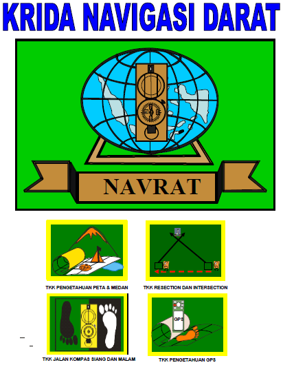
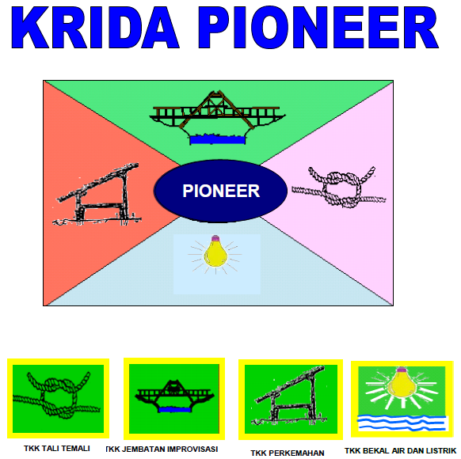
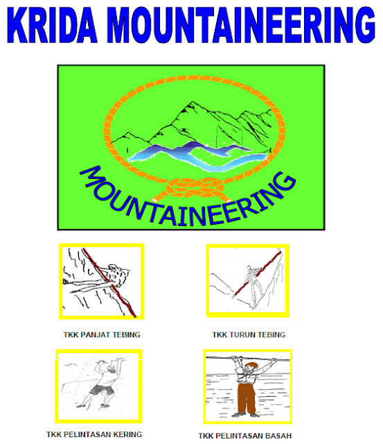
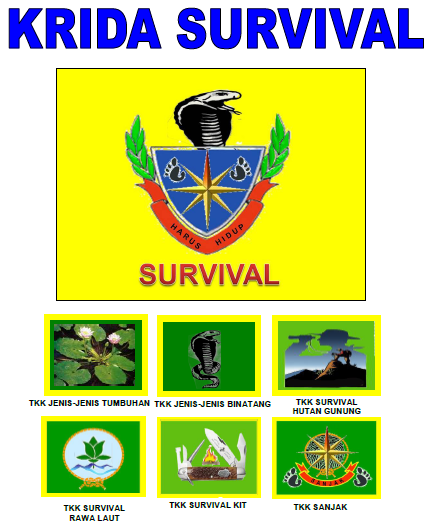
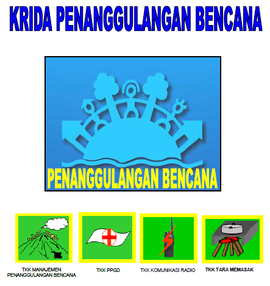

SAKA WIRA KARTIKA KORAMIL 10 DUKUHSETI
Saka Wira Kartika merupakan organisasi kepramukaan dibawah naungan TNI AD.
Saka Wira Kartika terdiri dari 5 Krida
Masing masing krida memiliki kebutuhan masing masing dan karateristik tersendiri
masing masing krida memiliki badge yang berbeda, yaitu :
-
Krida Navigasi Darat

-
Krida Pioneering

-
Krida Mountaineering

-
Krida Survival

-
Krida Penanggulangan Bencana Alam

Saka Wira Kartika mengundang banyak minat para pelajar yang suka dengan kegiatan pramuka
sehingga banyak yang rela menghabiskan waktu hanya untuk mengikuti kegiatan ini